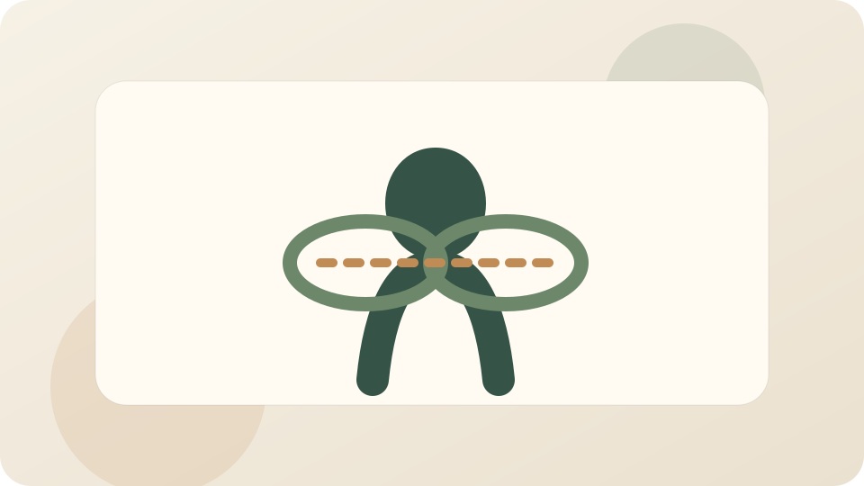

Дыхание и стабилизация корпуса
Неспешная практика на дыхание, ребра и мягкое включение центра корпуса без силового перенапряжения.
Фокус: Диафрагма, ребра, центр корпуса
Смотреть разборВидео и описания
Раздел собран как публичная библиотека упражнений: локальные видеофайлы, краткое описание, шаги выполнения и обязательные предупреждения по безопасности.

Неспешная практика на дыхание, ребра и мягкое включение центра корпуса без силового перенапряжения.
Фокус: Диафрагма, ребра, центр корпуса
Смотреть разбор
Набор мягких движений для перерыва между рабочими блоками: раскрытие передней линии тела и включение ног.
Фокус: Таз, передняя линия тела, ноги
Смотреть разбор
Короткая последовательность для шеи, плеч и грудного отдела, которая помогает мягко включиться в день.
Фокус: Шея, плечи, грудной отдел
Смотреть разбор